速览
依作品性质，以读文本推进的作品常能控制文字：改变文字大小、改变颜色、做一些动画、换字体等。引起画面震动或闪烁的演出也与此相近，但这次只谈文本。文字演出也许不太合非常严肃的作品，但改变文字和话语的表现，能更好传达角色的情感，给无机的游戏展开增添色彩，看起来很有必要。系统上要能设置这些，并在翻译成各国语言时，让翻译者能直接调整脚本比较好——这里的脚本指设定演出的数据。不是全部由原开发方设置，交给翻译方比较好，毕竟合适的强调方法因语言而异。日本漫画文化兴盛，书写文字和漫符等表现非常丰富：书写文字是直接写在背景上的拟声词等；漫符是人物旁边出现的汗珠、青筋标记等，现实中没有、但作为符号画出来，多为情感表现；字体和文字的区分使用、吹泡的区分使用也很丰富，在有限的信息量中做了多彩的表现。在这样的文化中，只用同尺寸的文本淡淡地推进太可惜了，值得深挖。但依国家和语言，这类演出起作用的尺度可能不同，所以由各国母语者连演出一起考虑比较好——所以应让翻译者能动脚本。文本显示是理所当然的功能，但如果是一直读下去的作品，在这里多下功夫会有相应的效果。
1. 控制文字 0:03
以读文本推进的作品，常能控制文字：
- 改变文字大小。
- 改变颜色。
- 做一些动画。
- 换字体。
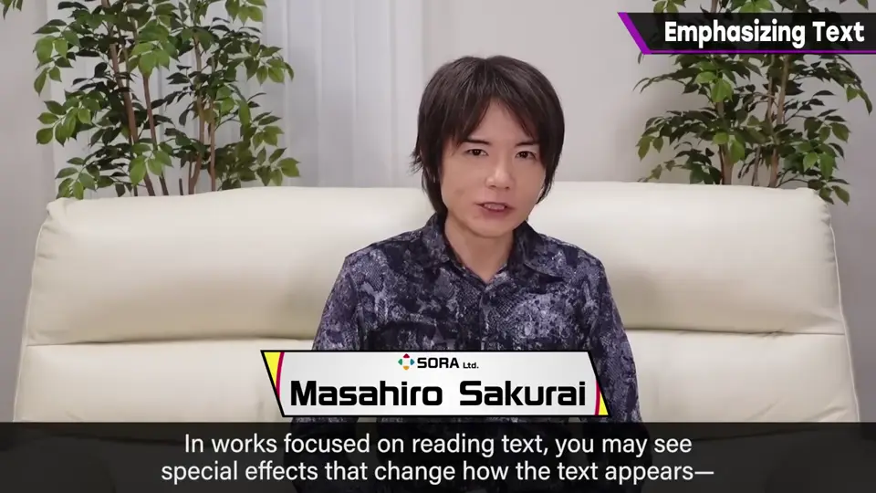
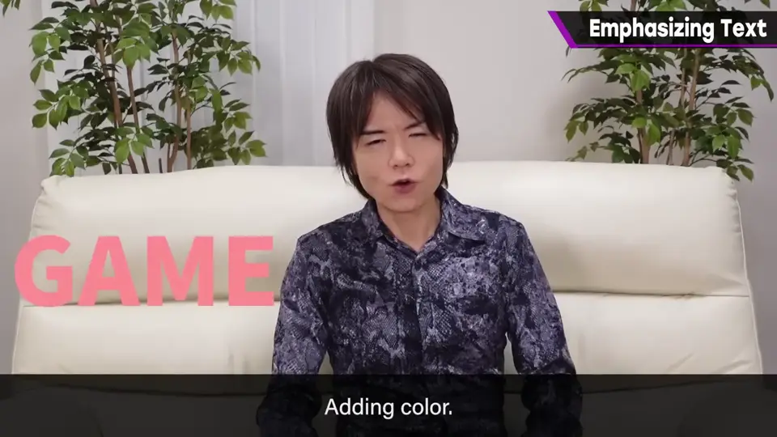
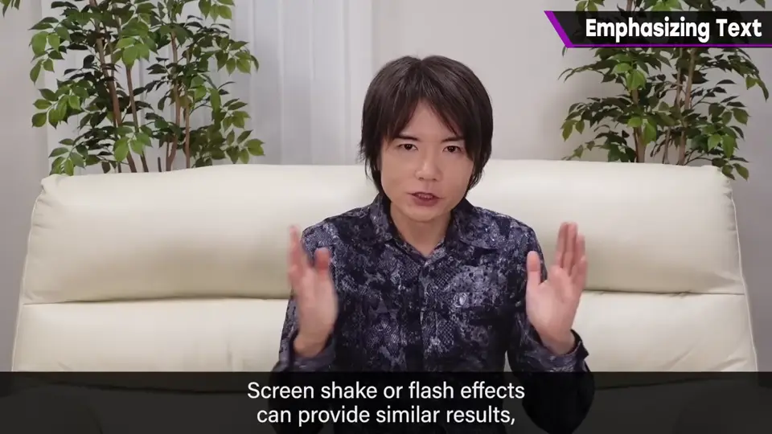
引起画面震动或闪烁的演出也与此相近，但这次只谈文本。
2. 为什么需要 0:30
文字演出也许不太合非常严肃的作品。
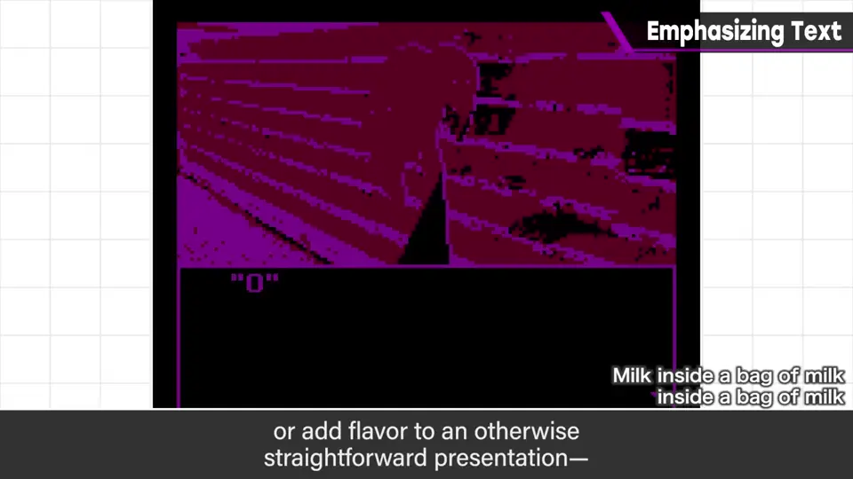
3. 交给翻译者 0:46
系统上要能设置这些，并在翻译成各国语言时，让翻译者能直接调整脚本——这里的脚本指设定演出的数据。
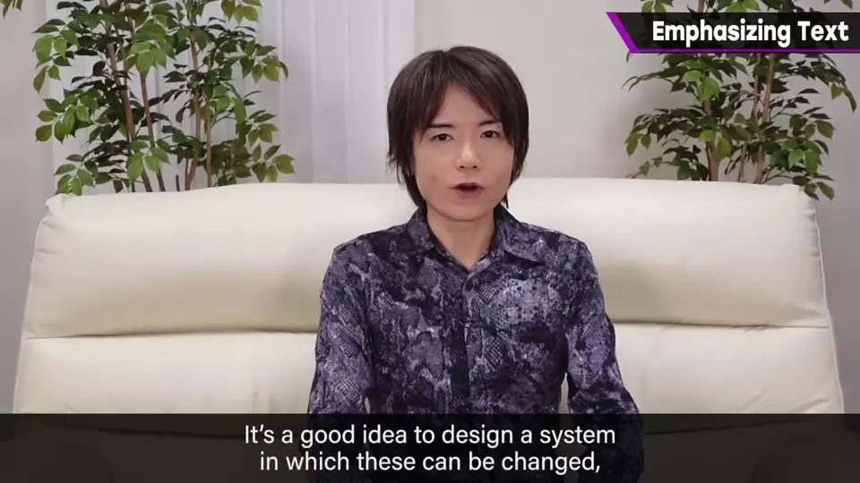
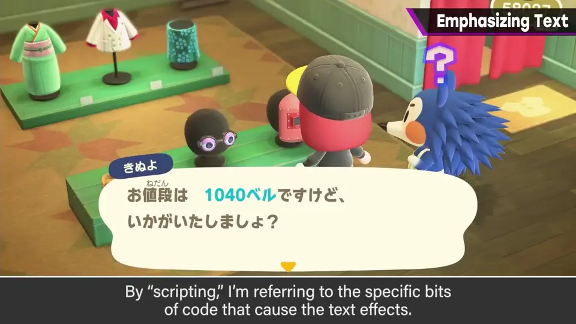
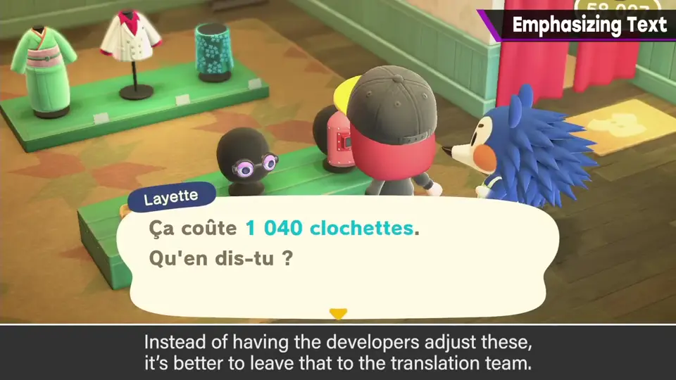
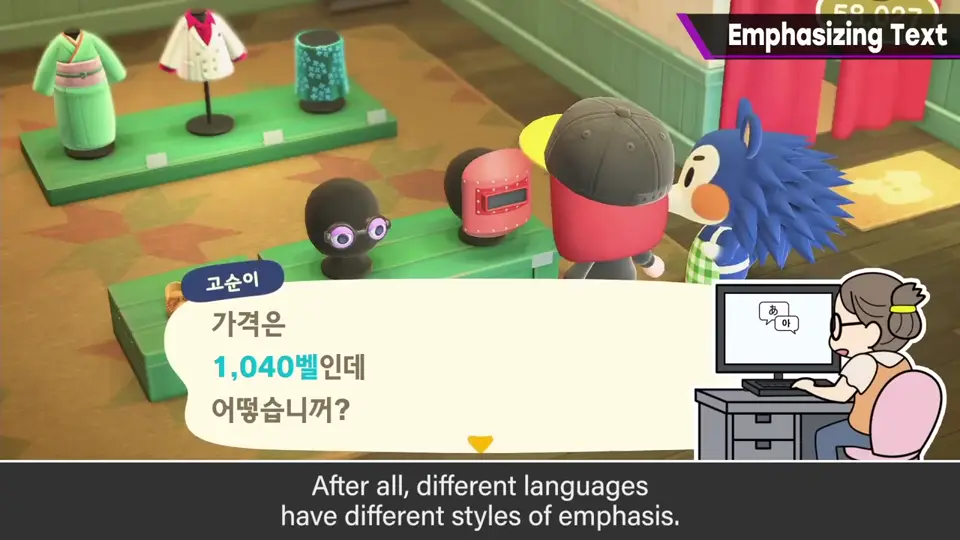
4. 日本的漫画文化 1:22
日本漫画文化兴盛，书写文字和漫符等表现非常丰富。
- 书写文字：直接写在背景上的拟声词等。
- 漫符：人物旁边出现的汗珠、青筋标记等，现实中没有、但作为符号画出来，多为情感表现。
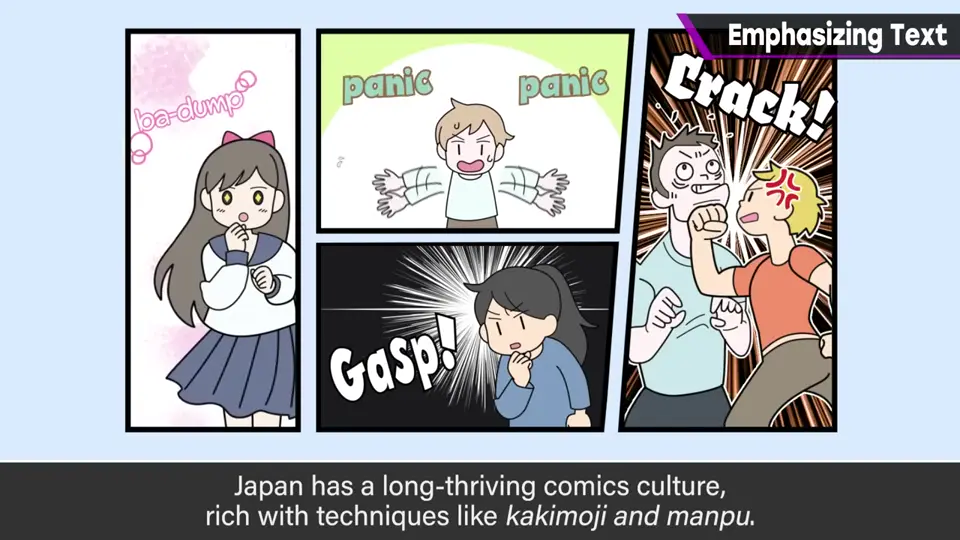
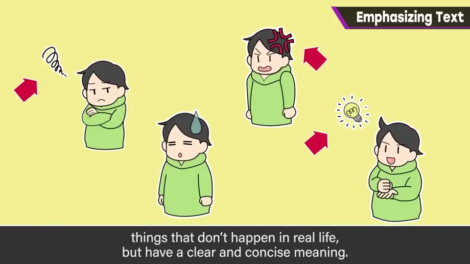
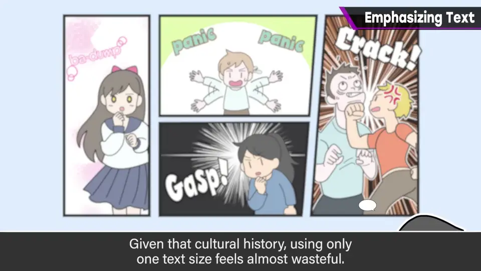
字体和文字的区分使用、吹泡的区分使用也很丰富，在有限的信息量中做了多彩的表现。
5. 由母语者考虑 2:00
依国家和语言，这类演出起作用的尺度可能不同。
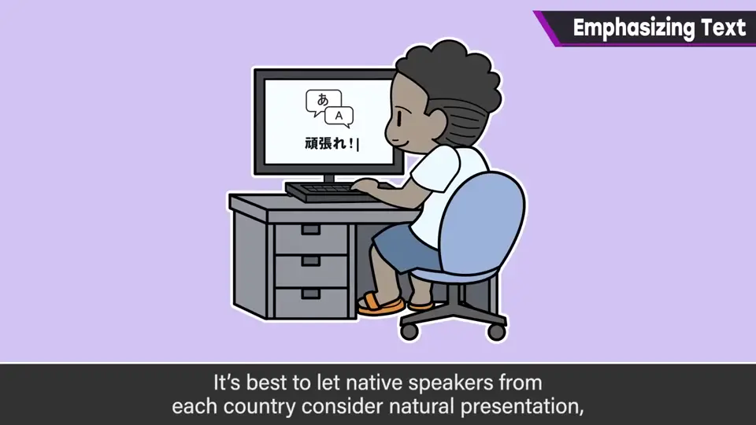
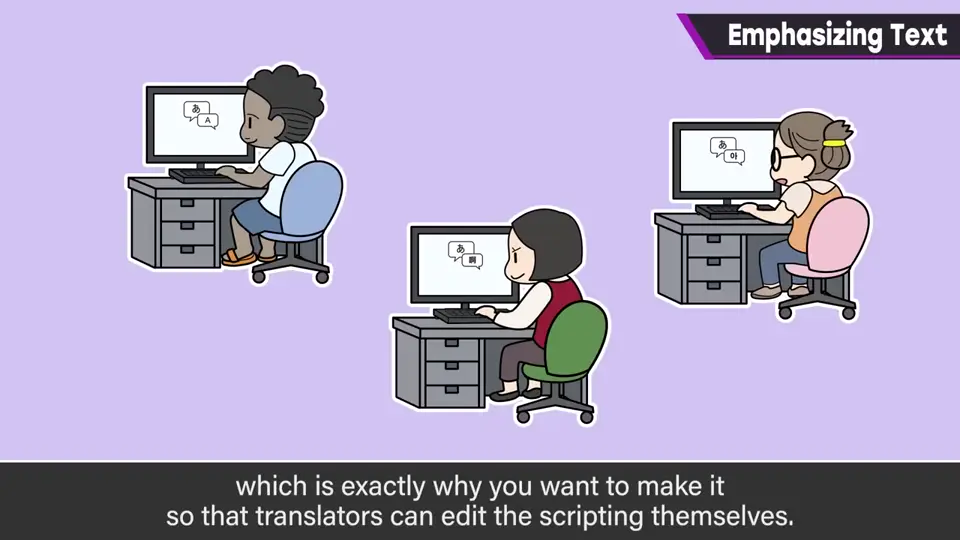
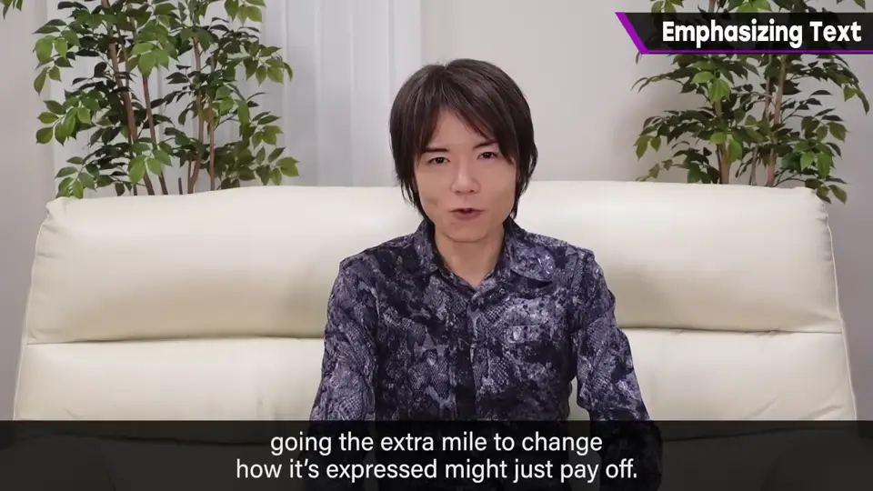
文本显示是理所当然的功能，但如果是一直读下去的作品，在这里多下功夫会有相应的效果。
自测题
1. 文字演出可以控制哪些方面？
大小、颜色、动画、字体。 0:10
2. 为什么要让翻译者能直接调整脚本？
各语言合适的强调方法不同，最好由各国母语者连演出一起考虑。 1:10
3. 什么是「漫符」？
人物旁的汗珠、青筋等现实中不存在、作为符号画出的情感表现。 1:35